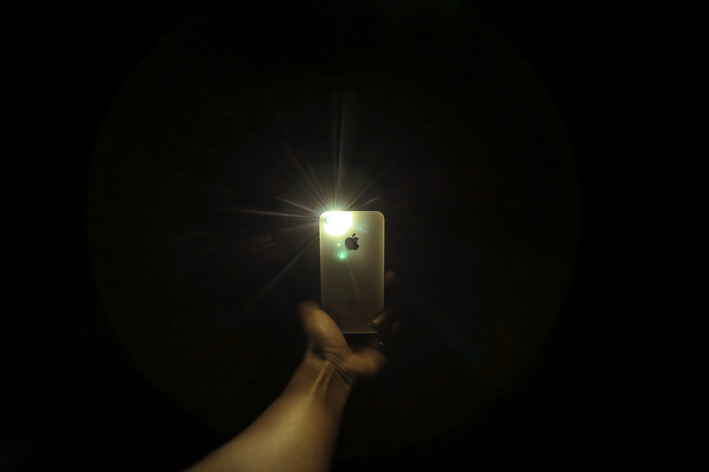

Using Flash or Torch with Html5-Qrcode
30 Oct 2022 | Authored by Minhaz
html5-qrcode is a fairly used open source library for implementing QR Code or barcode scanner in a web application. It has 400K+ downloads on Github and going around 31K downloads/week on npm.
I authored this library in my university days and have been maintaining this project since 2014 (If I remember correctly).
Enough bragging, coming back to the topic …
Almost all smartphones today come with camera which is coupled with a flash light. It’s also used as a torch while recording videos. Most QR scanning applications that are available on Android or IOS have support for enabling torch while scanning. This seems useful when scanning a code in low light conditions.
The feature request
There was a feature request on the project Github tracker for adding the same functionality to html5-qrcode library.
This is very interesting usecase - as it shows the power of web around controlling low level hardware on smartphones.
Support added for Html5QrcodeScanner
Considering the value add for end users, I have added the support for using torch (when supported) to the end to end library (i.e. Html5QrcodeScanner).
The feature is added as yet another button which shows up if
- The feature is enabled from config (off by default).
- Torch control is supported on the given browser + device.
It looks something like this
You can try it on scanapp.org.
So far I have verified it to work on Android devices on browsers like Google Chrome and Samsung’s default internet browser. I have verified it to work on Pixel 6 Pro, Samsung Flip 4 devices and One Plus 10 Pro.
I have also verified it to not work on Chrome or Safari on IOS (on Iphone 13).
Why? Likely not supported in the implementation - need to verify!
The support was added with PR#570. It’s been published under version 2.2.6.
To enable the feature with Html5QrcodeScanner one simply need to set showTorchButtonIfSupported to true.
let html5QrcodeScanner = new Html5QrcodeScanner(
"reader",
{
fps: 10,
qrbox: {width: 250, height: 250},
rememberLastUsedCamera: true,
aspectRatio: 1.7777778,
showTorchButtonIfSupported: true
});
How it works?
And how to set flash or torch with
Html5Qrcodelibrary.
First this you need to check is if torch is supported. Weather or not torch
is supported depends on the device, browser as well as the selected camera (often only back camera supports torch).
The idea is to see if torch is available on MediaTrackConstraints of the running video track. When the camera scan is running you can call getRunningTrackSettings() to verify if torch is supported.
/** Returns {@code true} if torch is supported. */
function isTorchSupported(html5Qrcode: Html5Qrcode): boolean {
let settings = html5Qrcode.getRunningTrackSettings();
return "torch" in settings;
}
If torch is indeed supported, the next step is to enable it. You can use applyVideoConstraints(..) API to request turning on torch.
let constraints: MediaTrackConstraints = {
"torch": true,
"advanced": [{ "torch": true }]
};
await html5Qrcode.applyVideoConstraints(constraints);
let settings = html5Qrcode.getRunningTrackSettings();
if (settings.torch === true) {
// Torch was indeed enabled, succeess.
} else {
// Failure.
// Failed to set torch, why?
}
In a similar fashion, you can request turning off torch with the same API.
Why set twice?
"advanced": [{ "torch": true }]
For backwards compatibility sake!
Browser and device support
As shared before this feature seems to be supported on Android devices. I have verified this on at least three Android devices and one IOS device.
Here’s summary:
-
Support verified on several Android devices.
- Support verified on following browsers in Android
- Google Chrome
- Samsung Internet Browser
- Opera
- Microsoft Edge
- Brave Browser
- Duck Duck Go Browser
- Verified lack of support on following browsers in Android
- Mozilla Firefox
- Verified lack of support on Chrome and Safari on IOS (Iphone 13)
In case you get a chance to test on more devices using scanapp.org, please add information in comments. I’ll update this article accordingly.
Photo credits
- Special thanks to photo by Gift Habeshaw on Pexels.
Like this article?
If you like this article, you can find more of my articles on Medium. If you are already on Medium you can follow me and subscribe to my articles.
If you are not on Medium, you can join with my link. Medium will pay me a peice and that’d be helpful for me to write more such articles. Medium has articles from several awesome authors.